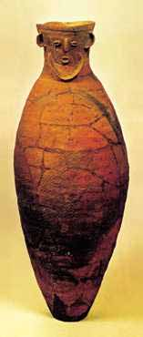
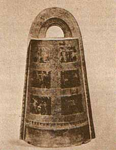

Yayoi Era
|  |
The Yayoi period (300 BC - 300 AD) is a period of coexistence of stone, bronze and iron tools. The influx of immigrants from the mainland increased, bringing with them bronze and iron implements, rice culture, and imported horses and cows. According to the archaeological inventory, the Yayoi culture is clearly divided into two areas: the western one with the center in the north of Kyushu Island and the eastern one in the area of the modern city of Osaka. The western area is characterized by the culture of bronze swords and other bronze weapons: spearheads and arrows, axes. North Kyushu was also the center for the distribution of Chinese-made bronze mirrors, which have magical and ritual significance. |
Along with swords and mirrors, jasper pendants have been found in northern Kyushu. The sword, jasper and mirror became the symbols of royal power among the Japanese, and later - the "three sacred treasures", the regalia of the Japanese emperors.
|
The eastern area is represented by the culture of bronze bells (dotaku), found in the areas of ancient places of worship and temples. Agriculture has strengthened the settlement and social structure of society - the agricultural community. The head of this (dzokucho) had a sword and a spear as a symbol of power, which testifies to his function as a military leader. There was a continuous struggle between the tribes, during which there was a mixing of tribes and the folding of the modern appearance of the Japanese. In the course of this struggle, a tribal union was formed, led by the woman Himiko. |
 |
Himiko's reign was from about 173 to 250 AD. This tribal union of Yamatai (Yamatai) was located either in Kyushu or Honshu.
Tribal alliances established foreign policy ties with Korea and China, where they sent embassies. Relations with China took the form of tributes.

|

|